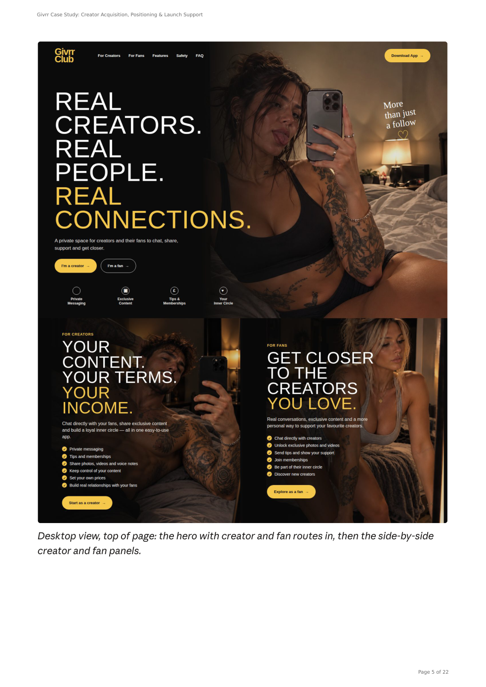

Website design & development
Website design
& development.
A website built around what your business needs it to do.
Discuss your project ↗A clear page layout is only part of the job. I look at the people using the site, what they need to understand and what should happen when they enquire, book or buy. Then I plan, design and build the agreed solution.
Based in Poole, supporting clients in Bournemouth and across Dorset. Working remotely throughout the UK and worldwide.
POOLE, DORSET · WORKING REMOTELYWeb design with the practical parts considered.
I build websites for small businesses, independent specialists and authors. That can mean a focused landing page, a business website, a Shopify store or a project with bespoke functionality behind the scenes.
Before choosing the layout or technology, we establish what the website needs to achieve, who it is for and what you need to manage afterwards. Content, navigation, enquiry routes and ongoing costs all affect the result.
I work directly with you from the brief through to delivery. The scope sets out the pages, functionality, content responsibilities and revisions so that a small landing page and a more involved build are priced appropriately.
What the build needs to cover.
A useful website makes its purpose clear and gives visitors a sensible next step. The work can include page structure, interface design, development, agreed integrations and responsive testing. Search-friendly titles, descriptions and crawlable content form part of the foundation; ongoing SEO or content work can be scoped separately.
Accessibility, privacy choices, form behaviour and the handover need consideration alongside the appearance. The exact checks and deliverables depend on the project and are set out in the quote.
Clear costs before work begins
Landing pages start from £395, single-page sites from £495, 3–5 page sites from £995 and 6–10 page sites from £1,750. Shopify websites start from £1,500. Bespoke functionality is quoted following discovery.
Hosting, domains, paid tools and other third-party charges are separate unless expressly included. Copywriting, ecommerce features, advanced integrations, revisions and launch support are specified in the quote.

A landing page with two audiences.
The Givrr Club case study shows how positioning and interface design came together for a creator platform. It explains the different routes for creators and fans and the research supporting the launch work.
See the Givrr Club landing page case study ↗Before we start.
Do you work with clients in Bournemouth and beyond Dorset?
Yes. I am based in Poole and work remotely with clients in Bournemouth, across Dorset, throughout the UK and internationally. We agree communication, deadlines and handover around the project.
Can you improve an existing website?
Yes. Send the website link and explain what needs changing. A focused update may be suitable; if a rebuild makes more sense, I will explain why before quoting.
Will a new website automatically rank on Google?
No. A sound technical foundation helps search engines understand a site, but rankings also depend on the content, competition and other signals. No position is guaranteed.
Should I choose a landing page or a multi-page website?
A landing page can suit one focused offer, campaign or audience journey. A multi-page site gives separate services or subjects room to be explained. The decision starts with what visitors need to understand and do, the content available and what you need to maintain. We agree the structure before the build is quoted.
What should I prepare before requesting a website quote?
Send a short outline of the business, the purpose of the site and the pages or functions you have in mind. Include your current site if you have one, brand assets, available copy and images, any booking or ecommerce requirements and your target date. You can flag gaps in the brief; content and integration responsibilities are agreed in the scope.
DEFINED STARTING SCOPES
What the starting price covers.
Starting prices apply to a defined entry scope. Your written quote confirms the deliverables, client-supplied materials, included revisions, total price and any third-party costs before work begins. Larger requirements and work outside the agreed scope require a separate written quote and approval. Revised prices apply to new enquiries; existing agreements and previously accepted quotes remain unchanged. Dorset Division is not VAT registered and does not charge VAT.
Small fixes — from £75
Includes and deliverables: Assessment and a targeted repair of one clearly identified issue, where the agreed work is suitable for this starting scope. The affected item, repair and checks are confirmed before acceptance.
You supply: The affected page or product, examples of the issue, expected behaviour and appropriate account access where needed.
Revisions: One consolidated feedback round on the agreed repair.
Outside scope: Unrelated faults, larger theme or code changes, data reconstruction and additional investigation require a separate quote before that work begins.
Landing page — from £395
Includes and deliverables: One focused page for an agreed offer or campaign, using supplied content, with responsive layout, agreed links and basic page titles and descriptions. You receive the agreed page build and handover files or access.
You supply: Final copy, branding, licensed images, destination links and suitable hosting or account access.
Revisions: Two consolidated design revision rounds within the agreed brief.
Outside scope: Copywriting, extra pages, custom forms, integrations, ecommerce, hosting, domains and ongoing SEO require a separate quote. Launch responsibilities are confirmed in the quote.
Single-page website — from £495
Includes and deliverables: One business website page with an agreed set of sections, using supplied content, with responsive layout, navigation, agreed contact links and basic page titles and descriptions. You receive the agreed build and handover files or access.
You supply: Final business copy, branding, licensed images, contact details and suitable hosting or account access.
Revisions: Two consolidated design revision rounds within the agreed brief.
Outside scope: Additional pages, copywriting, custom forms, booking integrations, ecommerce, hosting, domains and ongoing maintenance require a separate quote. The section list and launch responsibilities are confirmed before work.
3–5 page website — from £995
Includes and deliverables: A responsive business website using supplied content. The starting scope is three agreed pages; four or five pages are priced in the written quote. Page structure, basic titles and descriptions, agreed links and handover files or access are included.
You supply: Final copy and licensed images for each page, branding, contact details and suitable hosting or account access.
Revisions: Two consolidated design revision rounds across the agreed website.
Outside scope: Additional pages, copywriting, custom forms, ecommerce, integrations, hosting, domains and ongoing SEO require a separate quote. Functional checks and launch responsibilities are specified before work.
6–10 page website — from £1,750
Includes and deliverables: A responsive business website using supplied content. The starting scope is six agreed pages; seven to ten pages are priced in the written quote. Page structure, basic titles and descriptions, agreed links and handover files or access are included.
You supply: Final copy and licensed images for each page, branding, contact details and suitable hosting or account access.
Revisions: Two consolidated design revision rounds across the agreed website.
Outside scope: Additional pages, content creation, ecommerce, integrations, custom functionality, hosting and ongoing support require a separate quote. Functional checks and launch responsibilities are specified before work.
Shopify website — from £1,500
Includes and deliverables: Setup and styling of one Shopify store using an agreed existing theme and supplied content. The quote specifies the pages, initial product-upload allowance, payment and delivery settings, testing and handover. You retain access through your own store account.
You supply: A Shopify account, branding, final copy, product data and images, policies, and business decisions on payments, delivery and tax settings.
Revisions: Two consolidated design revision rounds within the agreed store brief.
Outside scope: Shopify subscriptions, paid themes and apps, large catalogue work, migration, custom theme development, advanced integrations and ongoing management are quoted separately. No unlimited product upload is included.
Bespoke functionality — quoted following discovery
Includes and deliverables: An agreed discovery stage establishes the required behaviour, access, dependencies and acceptance criteria before a build price is offered. Any discovery fee is agreed before discovery begins.
You supply: The intended workflow, users, existing systems and available technical information.
Revisions: Build deliverables, revision allowances and testing are set out in the individual quote.
Outside scope: Portals, apps, integrations and automation are scoped individually. There is no advertised fixed-price bespoke build or automatic commitment to development.
A revision round means one collected set of feedback within the original brief. A new direction, additional deliverable or change to approved content is additional work and requires a separate quote. Corrections needed because agreed work was not supplied correctly are not treated as paid extras.
Related services
CLEAR SCOPE · DIRECT SUPPORT
Tell me what needs doing.
Landing pages from £395 · Single-page websites from £495 · 3–5 page websites from £995. Starting prices cover a defined scope. I am not VAT registered and do not charge VAT.
Send a short outline of the project, the files or links you already have and any deadline. I will explain the sensible next step and quote before work begins.